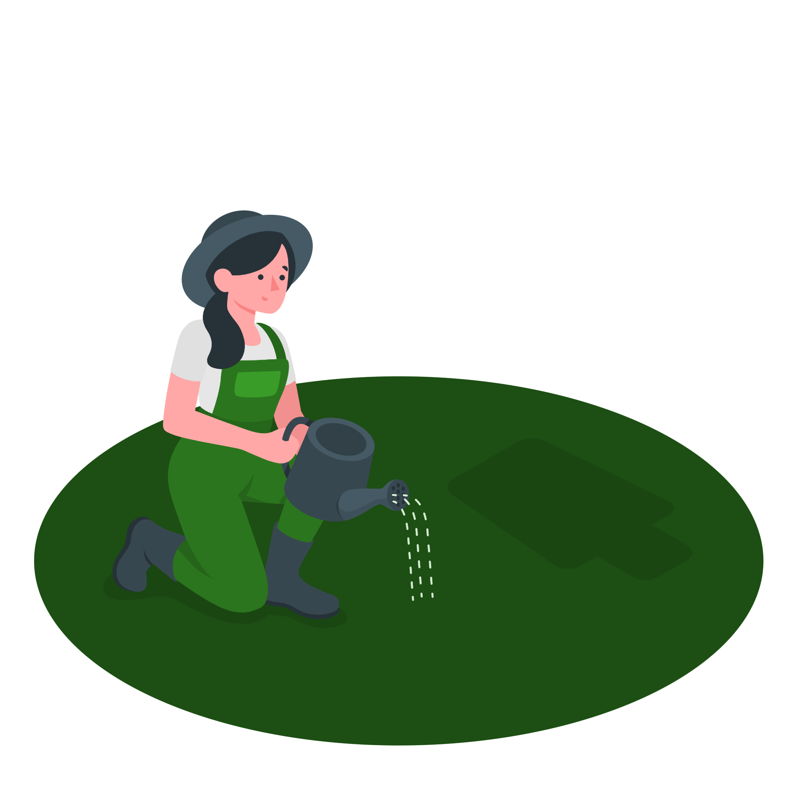

<ion-content fullscreen  scroll-y="false">
 <div  class="container-fluid contourEspace">
  <ion-slides pager="true">
    <ion-slide>
      <div class="slide">
        
      </div>  
        <h2 class="mb-4 mt-4 fw-bolder">ETAPE 1</h2>
        <p>
          The ionic conference app is a practical preview of the ionic framework in action, and a
          demonstration of proper code use.
        </p>
      
    </ion-slide>

    <ion-slide>
      <div class="parent">
        <div class="child1">
          
        </div>
        <div class="container-fluid contenu pt-4 child2">
          <h2 class="mb-4  fw-bolder">ETAPE 2</h2>
        <p>
          <b>Ionic Framework</b> is an open source SDK that enables developers to build high quality mobile apps
          with web technologies like HTML, CSS, and JavaScript.
        </p>
        </div>
      </div>
    </ion-slide>

    <ion-slide>
      
      <h2 class=" fw-bolder">ETAPE 3</h2>
      <div class="contenu1">
        <p>
          <b>Appflow</b> is a powerful set of services and features built on top of Ionic Framework that brings a
          totally new level of app development agility to mobile dev teams.
        </p>
      </div>
    </ion-slide>

    <ion-slide>
      
      <h2>Ready to Play?</h2>
      <ion-button fill="clear">Continue <ion-icon slot="end" name="arrow-forward"></ion-icon></ion-button>
    </ion-slide>
  </ion-slides>
 </div>
</ion-content>